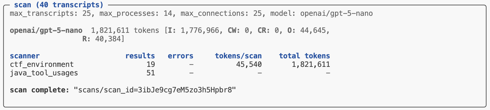

Results
Overview
The results of scans are stored in directory on the local filesystem (by default ./scans) or in a remote S3 bucket. When a scan job is completed its directory is printed, and you can also use the scan_list() function or scout scan list command to enumerate scan jobs.
Scan results include the following:
Scan configuration (e.g. options passed to scan() or to
scout scan).Transcripts scanned and scanners executed and errors which occurred during the last scan.
A set of Parquet files with scan results (one for each scanner). There are functions available to interface with these files as Pandas data frames or DuckDB databases.
Workflow
Scout CLI
The scout scan command will print its status at the end of its run. If all of the scanners completed without errors you’ll see a message indicating the scan is complete along with a pointer to the scan directory where results are stored:

You can then pass that directory to the scan_results_df() function to get access to the underlying data frames for each scanner:
from inspect_scout import scan_results
results = scan_results_df("scans/scan_id=3ibJe9cg7eM5zo3h5Hpbr8")
deception_df = results.scanners["deception"]
tool_errors_df = results.scanners["tool_errors"]Python API
The scan() function returns a Status object which indicates whether the scan completed successfully (in which case the scanner results are available for analysis). You’ll therefore want to check the .completed field before proceeding to read the results. For example:
from inspect_scout import (
scan, scan_results, transcripts_from_logs
)
from .scanners import ctf_environment, java_tool_calls
status = scan(
transcripts=transcripts_from_logs("./logs"),
scanners=[ctf_environment(), java_tool_calls()]
)
if status.complete:
results = scan_results_df(status.location)
deception_df = results.scanners["deception"]
tool_errors_df = results.scanners["tool_errors"]DuckDB
The above examples demonstrated reading scanner output as Pandas data frames. If you prefer, you can also read scanner data from a DuckDB database as follows:
results = scan_results_db("scans/scan_id=3ibJe9cg7eM5zo3h5Hpbr8")
with results:
# run queries to read data frames
df = results.conn.execute("SELECT ...").fetch_df()
# export entire database as file
results.to_file("results.duckdb")Results Data
The Results object returned from scan_results_df() includes both metadata about the scan as well as the scanner data frames:
| Field | Type | Description |
|---|---|---|
complete |
bool | Is the job complete? (all transcripts scanned) |
spec |
ScanSpec | Scan specification (transcripts, scanners, options, etc.) |
location |
str | Location of scan directory |
summary |
Summary | Summary of scan (results, errors, tokens, etc.) |
errors |
list[Error] | Errors during last scan attempt. |
scanners |
dict[str, pd.DataFrame] | Results data for each scanner (see Data Frames for details) |
Data Frames
The data frames available for each scanner contain information about the source evaluation and transcript, the results found for each transcript, as well as model calls, errors and other events which may have occurred during the scan.
Row Granularity
Note that by default the results data frame will include an individual row for each result returned by a scanner. This means that if a scanner returned multiple results there would be multiple rows all sharing the same transcript_id. You can customize this behavior via the rows option of the scan results functions:
rows = "results" |
Default. Yield a row for each scanner result (potentially multiple rows per transcript) |
rows = "transcripts" |
Yield a row for each transcript (in which case multiple results will be packed into the value field as a JSON list of Result) and the value_type will be “resultset”. |
Available Fields
The data frame includes the following fields (note that some fields included embedded JSON data, these are all noted below):
| Field | Type | Description |
|---|---|---|
transcript_id |
str | Globally unique identifier for a transcript (maps to EvalSample.uuid in the Inspect log or sample_id in Inspect analysis data frames). |
transcript_source_id |
str | Globally unique identifier for a transcript source (maps to `eval_id` in the Inspect log and analysis data frames). |
transcript_source_uri |
str | URI for source data (e.g. full path to the Inspect log file). |
transcript_metadata |
dict JSON |
Eval configuration metadata (e.g. task, model, scores, etc.). |
scan_id |
str | Globally unique identifier for scan. |
scan_tags |
list[str] JSON |
Tags associated with the scan. |
scan_metadata |
dict JSON |
Additional scan metadata. |
scanner_key |
str | Unique key for scan within scan job (defaults to scanner_name). |
scanner_name |
str | Scanner name. |
scanner_file |
str | Source file for scanner. |
scanner_params |
dict JSON |
Params used to create scanner. |
input_type |
transcript | message | messages | event | events | Input type received by scanner. |
input_ids |
list[str] JSON |
Unique ids of scanner input. |
input |
ScannerInput JSON |
Scanner input value. |
uuid |
str | Globally unique id for scan result. |
label |
str | Label for the origin of the result (optional). |
value |
JsonValue JSON |
Value returned by scanner. |
value_type |
string | boolean | number | array | object | null | Type of value returned by scanner. |
answer |
str | Answer extracted from scanner generation. |
explanation |
str | Explanation for scan result. |
metadata |
dict JSON |
Metadata for scan result. |
message_references |
list[Reference] JSON |
Messages referenced by scanner. |
event_references |
list[Reference] JSON |
Events referenced by scanner. |
validation_target |
JsonValue JSON |
Target value from validation set. |
validation_result |
JsonValue JSON |
Result returned from comparing validation_target to value. |
scan_error |
str | Error which occurred during scan. |
scan_error_traceback |
str | Traceback for error (if any) |
scan_events |
list[Event] JSON |
Scan events (e.g. model event, log event, etc.) |
scan_total_tokens |
number | Total tokens used by scan (only included when rows = "transcripts"). |
scan_model_usage |
dict [str, ModelUsage] JSON |
Token usage by model for scan (only included when rows = "transcripts"). |
Several of these fields can be used to link back to the source eval log and sample for the transcript:
transcript_id— This is the same as theEvalSample.uuidin the Inspect log or thesample_idin data frames created by samples_df().transcript_source_id— This is the same as theeval_idin both the Inspect log and Inspect data frames.transcript_source_uri— This is the full path (filesystem or S3) to the actual log file where the transcript was read from.